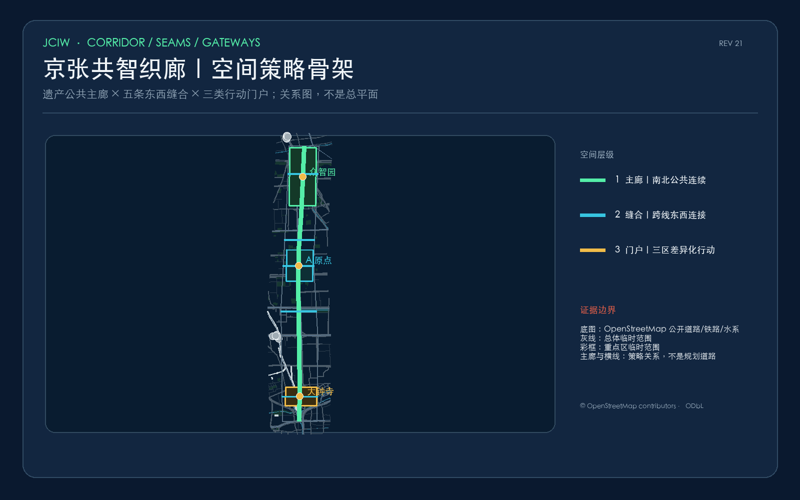
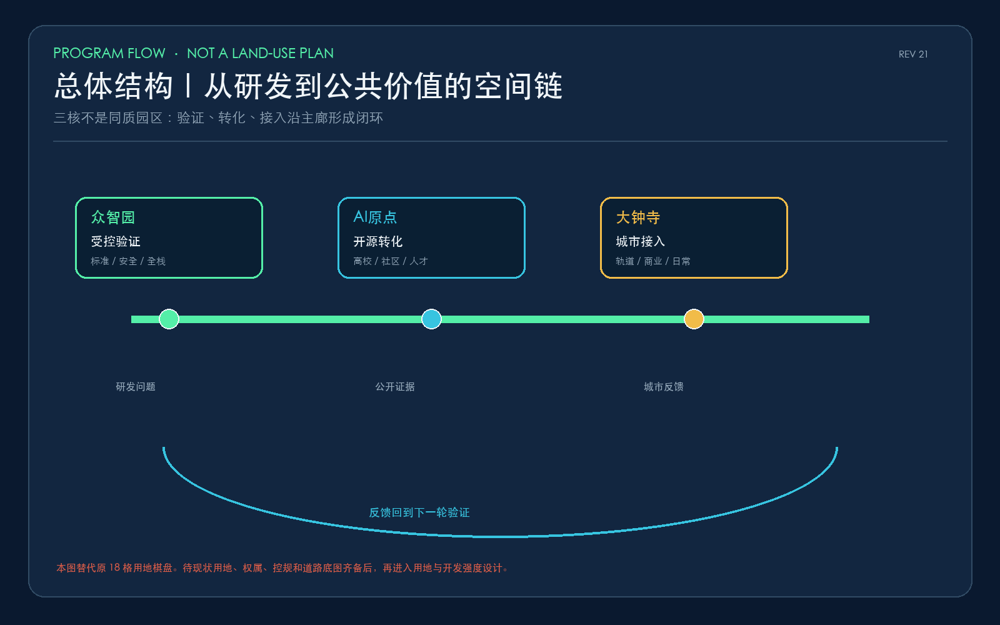
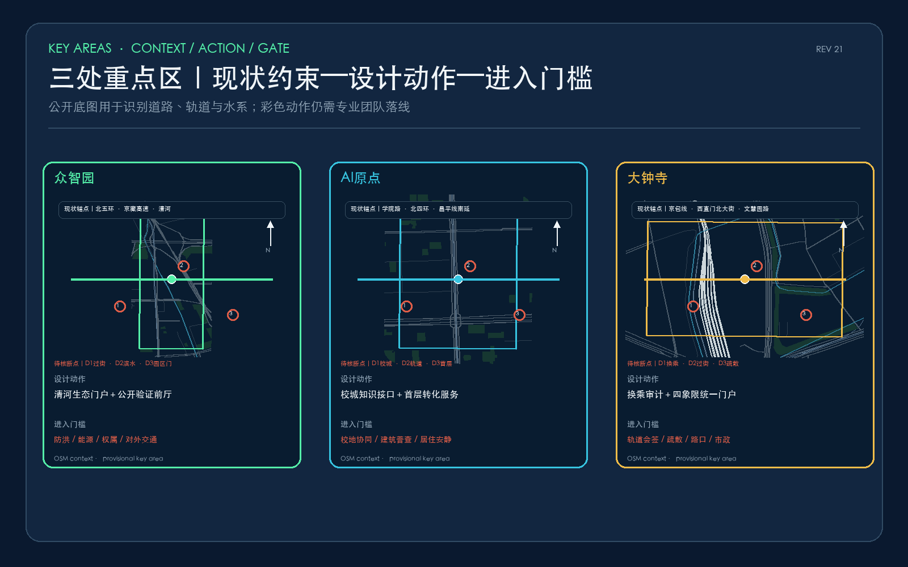
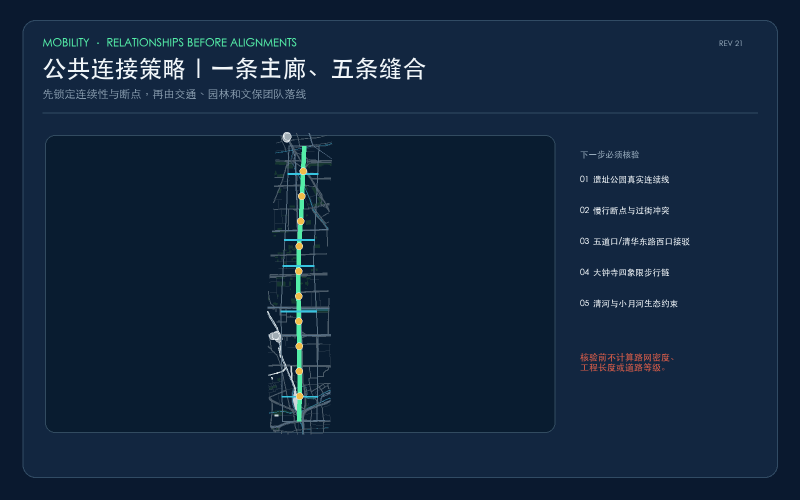
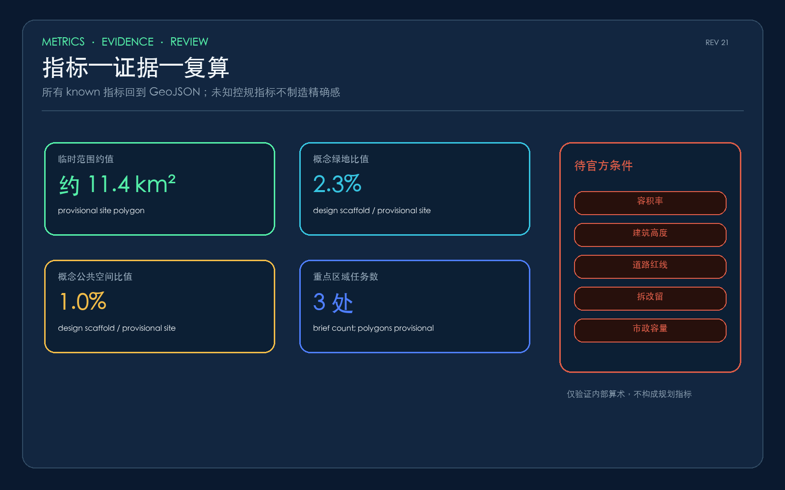
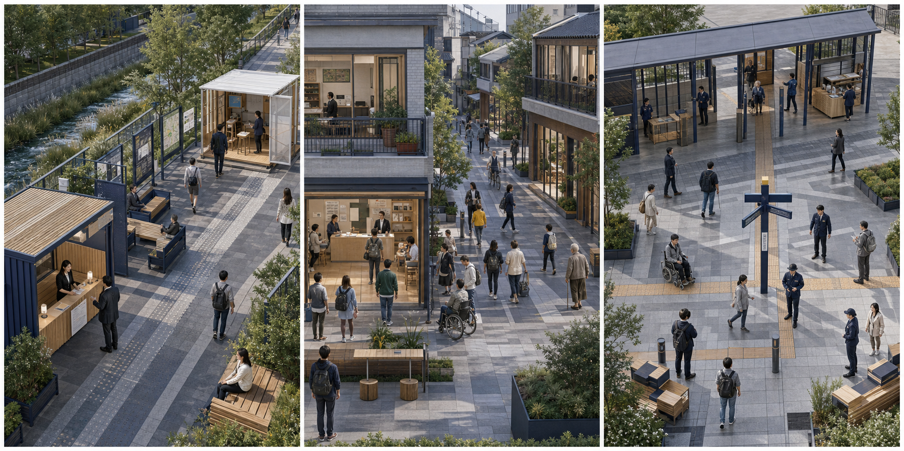

众智园
验证治理城市接驳 → 验证前厅 → 可观察测试庭 → 清河公共廊
首期验证：步行审计、临时座椅与公开验证牌百年轨迹，万千共智——把铁路遗产、开放验证与日常生活织成一套可进入、可质疑、可退出的公共智能城市。
边界说明：当前采用组织方提供的 provisional geometry，仅用于概念设计、自检与展示，不是官方红线；正式 polygon 发布后需整体复算。
用地比例、建筑规模、路网密度与工程长度已撤回，待现状底图和专业调查后再计算。机器属性中的比例仅复算提交图层，不作为规划结论。





城市接驳 → 验证前厅 → 可观察测试庭 → 清河公共廊
首期验证：步行审计、临时座椅与公开验证牌校园接口 → 零号轨迹厅 → 成果转化街 → 社区共享客厅
首期验证：借用首层与移动服务盒轨道站厅 → 四象限门厅 → 万象接口厅 → 京张公共廊
首期验证：编号导视、地面轨迹与人工引导
共同底线：默认不做人脸识别、不建立跨场景画像、不以算法评分限制公共服务，并始终保留人工接管、申诉和非 AI 通道。
统一判断顺序：日常优先 → 弱者优先 → 替代通道优先 → 可撤除优先。安全、基本通行、无障碍、未经授权的数据处理或持续扰民触发硬性否决门。
命名、全球案例、场景、地标、文化叙事和长期运营均已建立正文与图纸索引；专业内容检查、空间复算和静态安全检查分别执行，机器结果不替代专业判断。
文件直接证明范围任务与提交内容；运行验证只证明拓扑、算术、哈希和静态安全；空间结构、场景协议、项目组合与运营节律属于概念设计推断。九项资料缺口关闭前，不形成法定或工程结论。
权威事实回到 sources.json；设计判断回到 geometry 与 metrics；控规、权属、道路红线、市政容量和工程可行性回到 assumptions.json。机器 PASS 不代表内容可靠、专业完成或官方批准。